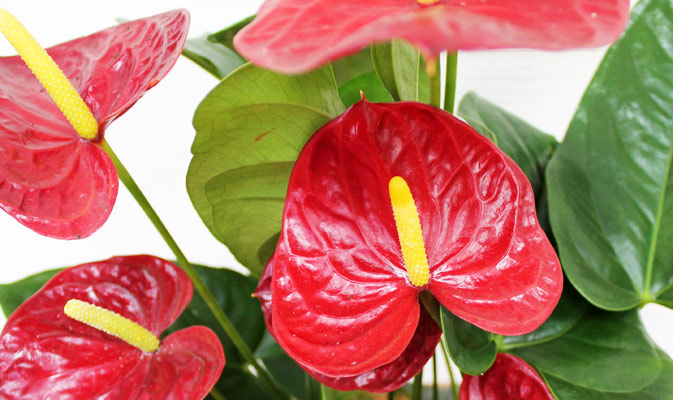

Антуриум в дикорастущем виде встречается в тропиках Южной Америки. Был завезен во Францию во второй половине XIX века, а затем стал популярен и во всей Европе. Название растения дословно переводится, как «хвостообразный цветок», в народе он получил множество других имен – Фламинго, Поросячий хвост, Чертов язык. Цветок широко известен под названием «Мужское счастье».
Существует красивая легенда происхождения антуриума. Согласно ей, цветок – заколдованная девушка, перед свадьбой прыгнувшая в огонь костра, чтобы не выходить замуж за вождя-тирана. Боги превратили ее в красивое растение, внешний вид которого полностью напоминает платье невесты.
Антуриум роисходит из тропических и субтропических районов Центральной и Южной Америки. Северная граница ареала находится в Мексике, южная — в Парагвае и на севере Аргентины.
Антуриумы широко распространены в Андах Южной Америки и в Кордильерах Центральной Америки, от уровня океана до 3400 м над уровнем моря. Высокогорные виды в основном являются эпифитами. В нижнем поясе гор, на высотах 100—300 м над уровнем моря, распространена особая группа антуриумов, обитающих в саваннах.